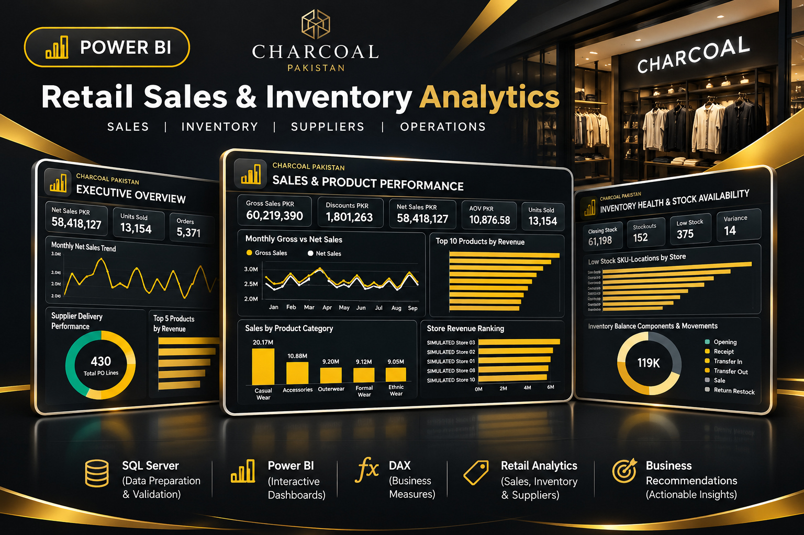

Charcoal Pakistan — Retail Sales & Inventory Analytics
Developed an end-to-end SQL Server and Power BI retail analytics case study, connecting sales, supplier delivery, product performance and inventory health through three interactive dashboard pages and validated DAX KPIs.
Project details
Bring together simulated apparel retail sales, purchasing, supplier delivery and stock data to help decision-makers understand revenue performance, availability risks and inventory accuracy.
Analytical approachUsed SQL Server for relational analysis and reconciliation, then built three Power BI pages: Executive Overview, Sales & Product Performance, and Inventory Health & Stock Availability. Created DAX measures and validated location-level filter behavior.
Findings & recommendationsThe simulated dataset shows PKR 58.42M net sales, 13,154 units sold, a 47.44% supplier on-time delivery rate, 152 stockout SKU-location combinations and 375 low-stock combinations at the latest snapshot. Recommended investigating supplier delays, prioritizing replenishment and monitoring inventory discrepancies.
Project scopeIndependent portfolio project using simulated data; figures do not represent actual company performance.